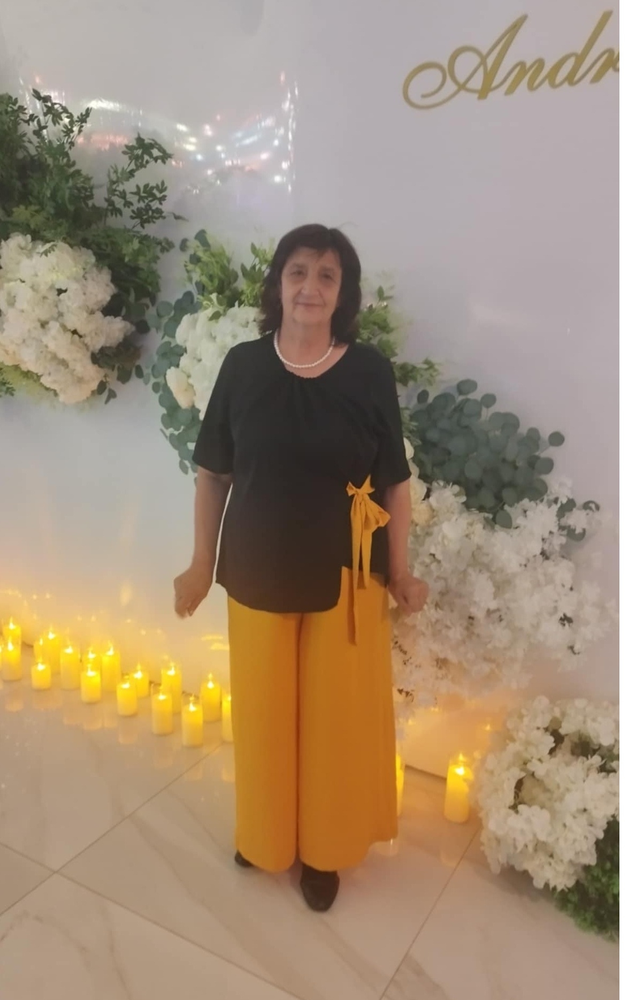

Profil de Unic Meșter Popular din Republica Moldova: Valentina Cemărtan
Păstrătoarea tradiției prin arta păpușilor din porțelan rece

Date Biografice
Nume: Valentina Cemărtan
Data nașterii: 19 octombrie 1959 (67 de ani)
Locul nașterii: Satul Ciobalaccia, raionul Cantemir
Locul de trai actual: Satul Țolica, raionul Cantemir
Studii: Absolventă a Institutului Pedagogic de Stat din Tiraspol,
Facultatea de Geografie,
specializarea
Biologie și Geografie.
Nașterea unei Păpuși din Porțelan
Pentru doamna Valentina, crearea unei păpuși înseamnă „însuflețirea” materialelor prin 6
etape riguroase:
1.Detaliile din porțelan:: Se modelează fața, mâinile și picioarele din porțelan rece și se
lasă la uscat natural.
2.Scheletul:: Se construiește o structură din sârmă pentru a oferi stabilitate și mobilitate.
3.Volumul:: Corpul păpușii prinde formă prin acoperirea sârmei cu materiale textile.
4.Asamblarea: Toate piesele sunt unite și pregătite pentru haine.
5.Hainele tradiționale:: Se coase manual costumul popular miniatural, respectând cu strictețe
tradiția.
6.Pictura: Se pictează trăsăturile feței, moment în care păpușa capătă personalitate.
Finalizare și identitate: Păpușile sunt puse în cutii speciale cu eticheta „Republica Moldova –
Meșter Popular”. Fiecare creație primește un nume arhaic, oferindu-i astfel o istorie și o
identitate proprie